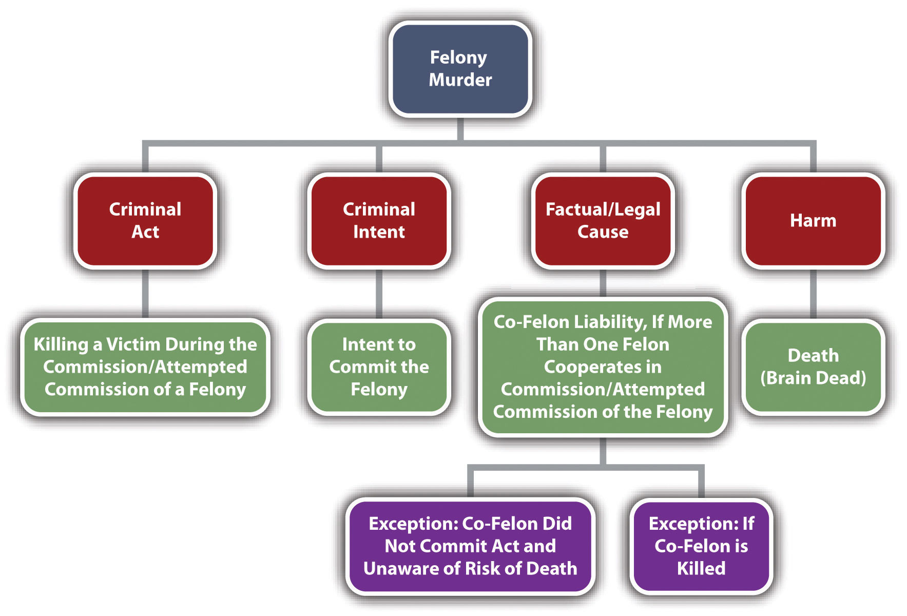

Felony murderA criminal homicide that occurs during the commission or attempted commission of a specified felony. is a criminal homicide that occurs during the commission or attempted commission of a felony. Most states and the federal government include felony murder in their penal codes.18 U.S.C. § 1111, accessed February 4, 2011, http://codes.lp.findlaw.com/uscode/18/I/51/1111. However, it has not been universally adopted. The Model Penal Code does not include felony murder per se. It does suggest a rebuttable presumption that killings that occur during the commission of specified dangerous felonies exhibit recklessness under circumstances manifesting extreme indifference to the value of human life (Model Penal Code § 210.2(1)(b)).
What distinguishes felony murder from murder is the absence of the typical murder intent. The criminal intent element required for felony murder is the intent required for a felony that causes a victim’s death.
When the defendant commits a felony that is inherently dangerous to life, he or she does so knowing that some innocent victim may die. In essence, this awareness is similar to implied malice, knowingly, or recklessly under circumstances manifesting extreme indifference to the value of human life. What is difficult to justify is a conviction for felony murder when the felony is not inherently dangerous to life. Thus most jurisdictions limit the felony murder doctrine to felonies that create a foreseeable risk of violence or death. States that include nonviolent felonies in their felony murder statutes generally grade them as second- or third-degree felony murder.Fla. Stat. Ann. § 782.04[4], accessed February 18, 2010, http://law.onecle.com/florida/crimes/782.04.html.
Joaquin, who has just lost his job, decides to burn down his apartment building because he can’t afford to pay the rent. Joaquin carefully soaks his apartment with lighter fluid, exits into the hallway, and throws a lit, lighter-fluid-soaked towel into the apartment. He then runs outside to watch the entire building burn down. Several tenants die of smoke inhalation because of the fire. In jurisdictions that recognize felony murder, Joaquin can probably be charged with and convicted of murder for every one of these deaths.
In this example, Joaquin did not intend to kill the tenants. However, he did most likely have the criminal intent necessary for arson. Therefore, felony murder convictions are appropriate. Note that Joaquin exhibited extreme indifference to whether the tenants in the building lived or died, which could also constitute the criminal intent of implied malice or depraved heart.
It is common for more than one defendant to cooperate in the commission of a felony. Group participation in criminal conduct could constitute more than one crime—for example, conspiracy—and could also place criminal responsibility squarely on a defendant who did not commit the criminal act. The general rule for felony murder in many jurisdictions is that if one defendant kills a victim during the commission or attempted commission of a specified felony, all defendants involved in the felony are guilty of felony murder.State v. Hoang, 755 P.2d 7 (1988), accessed February 13, 2011, http://scholar.google.com/scholar_case?case=2216953450979337225&q= heart+attack+during+robbery+%22co+felon%22&hl=en&as_sdt=2,5.
Joe and Jane dream up a plan to rob a local bank. Joe is designated as the primary robber and is supposed to enter the bank and hand a note to the teller demanding all the money in her station. Jane’s role in the felony is to drive the getaway vehicle to the bank, wait outside the front door with the motor running, and transport Joe and the money back to their apartment after the bank transaction is completed. Joe takes a handgun hidden beneath his jacket into the bank. He passes the note to the teller, and she frantically summons a security guard. As the security guard starts to approach, Joe pulls out the gun. An elderly lady standing to the left of Joe suffers a heart attack and dies at the sight of the gun. In this case, Joe and Jane can probably be convicted of felony murder. Note that Jane did nothing to directly cause the victim’s death from a heart attack. However, Jane did drive the getaway vehicle with the criminal intent to commit robbery, so Jane is criminally responsible for the consequences in many jurisdictions.
Some jurisdictions provide an exception to co-felon liability for felony murder if the defendant did not actually commit the act that killed the victim and had neither knowledge nor awareness that a death might occur.N.Y. Penal Law § 125.25 (3), accessed February 18, 2010, http://law.onecle.com/new-york/penal/PEN0125.25_125.25.html.
Review the example with Joe and Jane in Section 9 "Example of Co-Felon Liability for Felony Murder". Change this example so that Jane is a teller at the local bank. Joe and Jane plan the “robbery” so that Jane is to pretend Joe is a customer, and hand Joe all the money in her station after he enters the bank unarmed and passes her a phony check made out to “cash.” Without informing Jane, Joe brings a gun into the bank, “just in case.” The security guard observes Jane handing Joe large amounts of cash. Suspicious, he begins to approach the station. Joe notices and frantically pulls out the gun and points it at the security guard. The elderly lady standing to the left of Joe suffers a heart attack and dies at the sight of the gun. In this example, Jane may have a valid defense to co-felon liability for the elderly lady’s death in some jurisdictions. Although Jane had the intent to commit theft, a trier of fact could determine that Jane had neither the knowledge nor awareness that a death might occur because she believed she was cooperating in a nonviolent offense. Thus it is possible that in certain jurisdictions only Joe is subject to a conviction of felony murder in this case.
Generally, if the felony is inherently dangerous to life, and the defendant or defendants intentionally create a situation that is likely to result in death, if death does result, each and every defendant is guilty of felony murder. In some jurisdictions, this criminal liability exists even when someone other than a co-felon kills the victim.People v. Hernandez, 82 N.Y.2d 309 (1993), accessed February 18, 2010, http://scholar.google.com/scholar_case?case=3094702040122584711&q= People+v.+Hernandez+82+N.Y.2d+309&hl=en&as_sdt=2,5. Review the bank robbery committed by Joe and Jane, as discussed in Section 9 "Example of Co-Felon Liability for Felony Murder". If the security guard takes a shot at Joe but misses and kills the bank teller instead, both Joe and Jane are guilty of the bank teller’s death pursuant to this interpretation of the felony-murder doctrine.
Some jurisdictions relieve a defendant from criminal liability for felony murder if the death is the death of a co-felon, rather than a completely innocent victim.State v. Canola, 73 N.J. 206 (1977), accessed February 18, 2010, http://www.audiocasefiles.com/acf_cases/8722-state-v-canola. In the case of Joe and Jane discussed in Section 9 "Example of Co-Felon Liability for Felony Murder", if the security guard shoots and kills Joe in a jurisdiction that recognizes this exception, Jane is not guilty of felony murder.
Another important aspect that must be analyzed in any felony murder case is the concurrence of the felony and the death of the victim. The felony and the death must be part and parcel of the same continuous transaction. Therefore, there must be a determination of (1) when the felony begins and (2) when the felony ends. If the death occurs before or after the commission or attempted commission of the felony, the defendant might not be guilty of felony murder.
Carlos shoots and kills his drug dealer in a fit of temper because the drugs he bought are placebo. After the killing, it occurs to Carlos that the drug dealer might be carrying significant amounts of cash. Carlos thereafter steals some cash from the drug dealer’s pockets and runs off. Although this killing is probably murder, it is not felony murder. Carlos stole money from his drug dealer, but the theft occurred after the murder. Thus the killing did not happen during a robbery. If premeditation is proven, this could still be first-degree murder, but it is not first-degree felony murder.
More commonly, the issue is whether the killing occurs after the felony ends. The general rule is that the felony ends when the defendant has reached a place of temporary safety.People v. Young, 105 P.2d 487 (2005), accessed February 18, 2010, http://scholar.google.com/scholar_case?case=5918096649976465300&q= felony+murder+%22temporary+safety%22&hl=en&as_sdt=2,5. This place does not have to be the defendant’s residence; it could simply be a hiding place. Pursuant to this rule, a death that occurs during a car chase as the defendants flee the scene of the crime is considered felony murder.Del. Code Ann. Tit. 11 § 636 (a) (2), accessed February 18, 2010, http://law.justia.com/delaware/codes/title11/c005-sc02.html.
Figure 9.5 Diagram of Felony Murder
Felony murder can be first, second, or third degree.Fla. Stat. Ann. § 782.04, accessed February 18, 2010, http://law.onecle.com/florida/crimes/782.04.html. Some common examples of felonies listed in first-degree murder statutes are arson, rape, carjacking, robbery, burglary, kidnapping, and certain forcible sexual felonies.Cal. Penal Code § 189, accessed February 18, 2010, http://law.onecle.com/california/penal/189.html.
Answer the following questions. Check your answers using the answer key at the end of the chapter.